Taip, Tai Aš, Džiugsis
Su Gimtadieniu Mamyte!
Tave sveikina senai matytas sunelis, kuris linki
nenustoti Šypsotis ir gerti gyvenimo Džiaugsmą
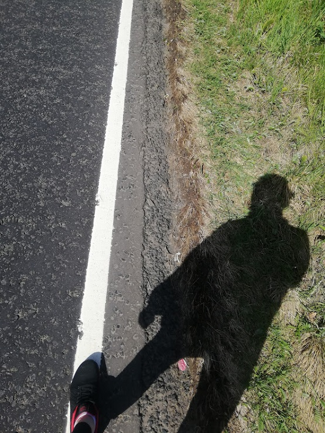
Keliavau į žygį, kurį pavadinau 'Mamos Gimtadienio žygiu'.
Mat jame fotografavau pačias gražiausias akimirkas,
kurias šičia su visom emocijom Tau ir padovanosiu!
Labai Tave Myliu!
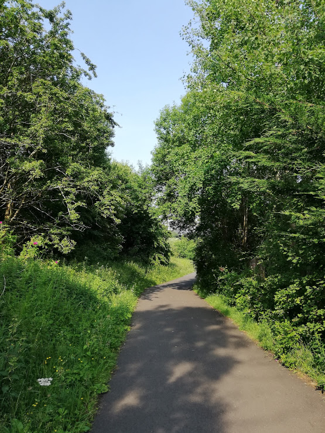
Žygis buvo gamtoje, kurioje galėjau apmąstyti ir pasidžiaugti, kad turiu šitokią Nuostabią Mamytę, kuri pripildė mano vidinį pasaulį pasakomis, kurios padeda Matyti Pasaulio Grožį
Pasaulis juk yra Yin ir Yang.
Dėkoju, Tau Mamytę, kad pasėjai sėklą manyje, kuriai pražystant aš
imiau rinktis žiūrėti į Žydrąja, Gražiąją Pasaulio Pusę!
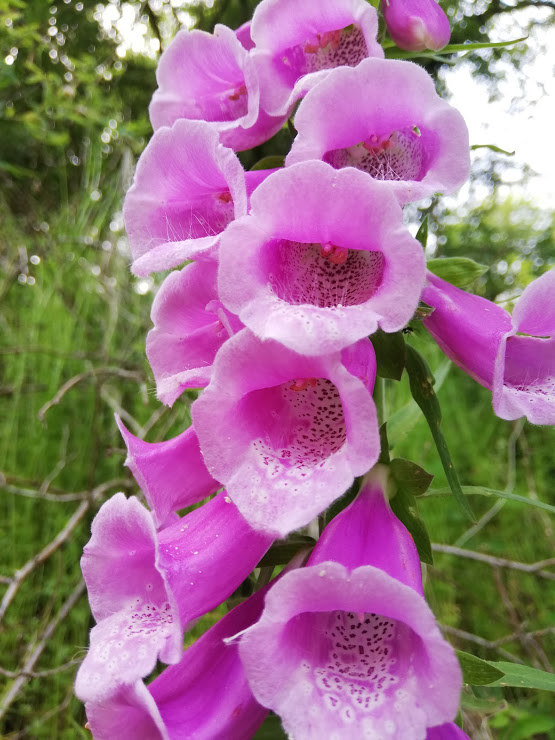
Žinoma, kaip gi Gimtadienis be Gelyčių!
Dovanoju šias ypatingas gėlytes Tau, Mamyte!
Be to, jos Laaabai Kvepia, užuodi?
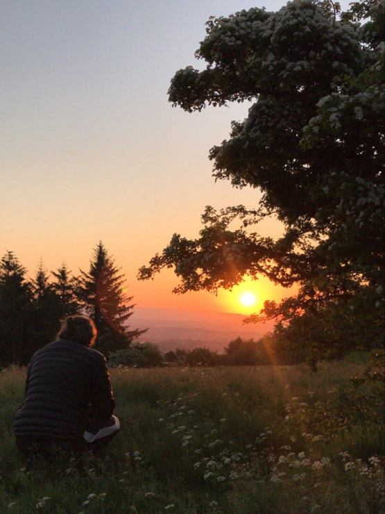
Dalinuosi magiškais įspūdžiais pasitinkant Saulę 04:30 ryto ant kalno ir stebint, kaip ji pateka iš po horizonte esančių kalnų viršūnių
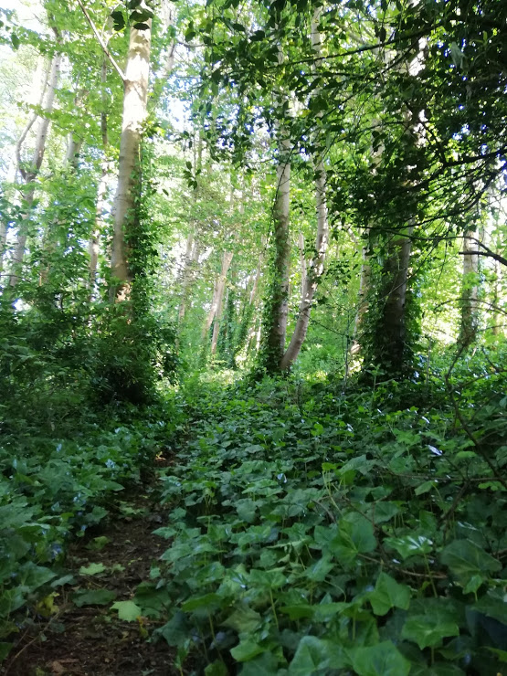
Mama, Tu tik pasižiūrėk, kokia čia Gamta...
Ji nuostabi...
Gyvenime patys Gražiausi yra 2 dalykai: Mano Mama ir Motina Gamta
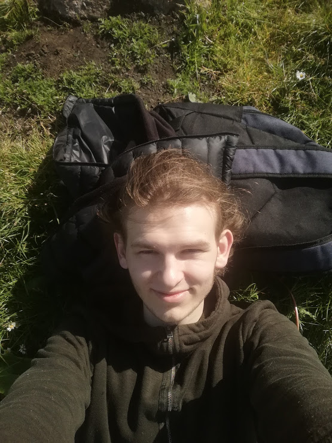
O čia ir Aš :)
Taip, Taip, Aš, Tavo Džiugsis !
Didysis šių Gražių Gimtadienio Nuotraukų, Fotografas !
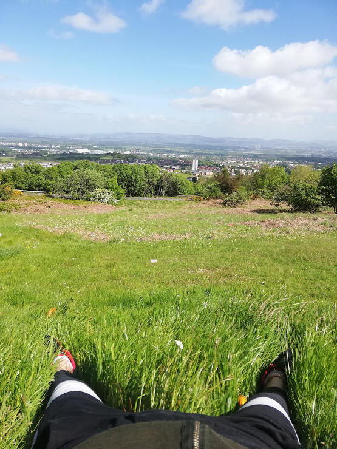
O čia leidžiu pamatyti užkulisius, kuriuose gali pamatyti, kaip
minkštai aš įsitaisęs gamtos lovoje
Jei pavyks įžiūrėti, tai nuotraukoje tolimoje yra kalnų peizažas,
tai va čia mano sekantis žygių tikslas
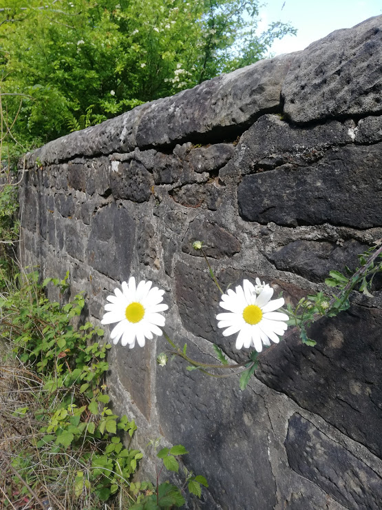
Nežinau, bet kai einant pamačiau šias gėlytes iškart pagalvojau
apie Mane ir Tave.
Kokios gi Jos (Mes) esame gražūs :)
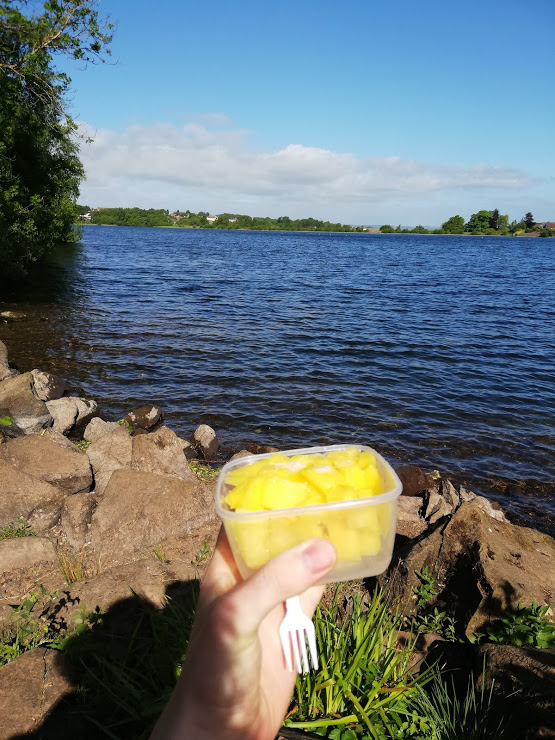
Einant sutikau pirmąjį Škotijos Ežerą
Iki tol nebuvau matęs Škotijoje ežerų, norėjau tave su Juo
supažindinti, jo vardas - Ežeras
P.S. Man labai patinka Mangai :)

Nusprendžiau įsiamžinti su naujuoju savo Draugu, Ežeru
Jis man priminė, koks aš esu Dėkingas Jums Tėvai...
Jūs Nuostabūs...
Mamyte, Aš Tave Myliu, Būčiuoju, Širdelėje Nešioju
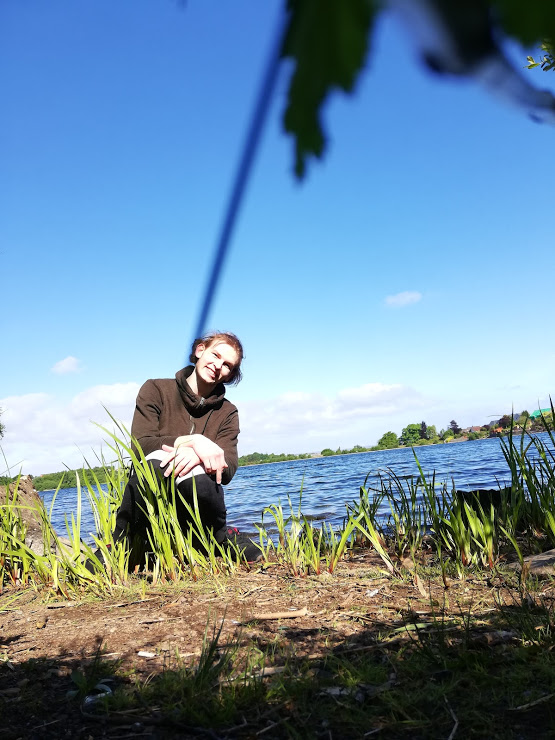
O čia aš darau Šypt
Skiriu šią šypseną Tau, Mamyte
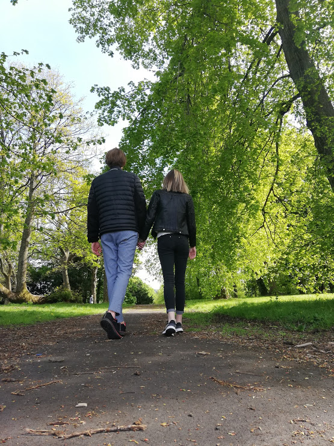
Dėkoju, Mamit, kad užauginai Mane tokį nuostabų!
Čia aš su savo Drauge Auguste, keliauju savo gyvenimo Takeliu
Mes Tave Sveikiname, Sveikiname ir dar Kartelį Sveikiname su
Gimtadieniu!
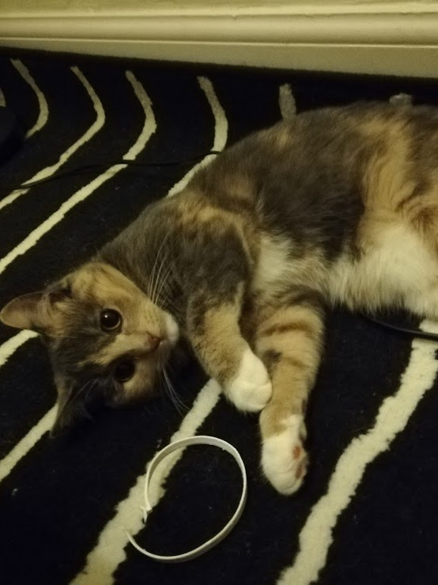
Tu vis užmiršti mano bendravardės vardą...
Džoja, Džojytė
Ji taip pat tave Sveikina su Gimtadieniu ir siunčią tau patį
gražiausią savo akyčių žvilgsnį
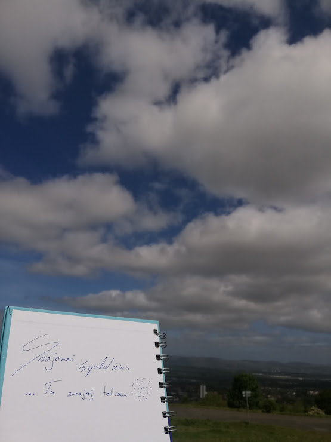
Kalne suvokiau - gyvenimo grožis yra Kelyje. Svajojau užlipti į kalną, o užlipęs suvokiau, kad laimė yra planuoti ir lipti. Užlipus apima Džiaugsmas, po kurio imi svajoti apie naujus tikslus. Knygutėje ir užsirašiau: 'Svajonei išsipildžius - Svajoji toliau'
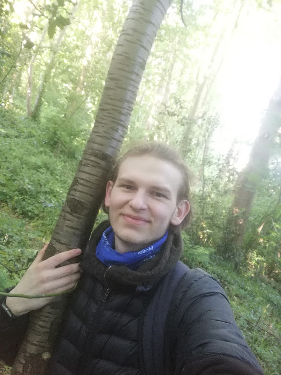
Svajonės - gyvenimo Grožis!
Džiugas - irgi gyvenimo Grožis!
Linkiu šiais metais, Daug Svajoti ir daug Džiaugsmo
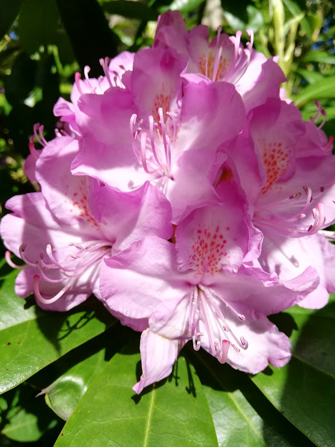
Ir žinoma, gyvenimo grožis taip pat yra Gėlės!
Linkiu šiais metais žydėti, taip pat Elegantiškai, kaip šios
gėlės, kurias irgi Tau Dovanoju, žydi...